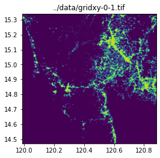

input_image = "../data/phl_ppp_2020_constrained.tif"Raster Processing
utilities for processing raster data

query_window_by_polygon
query_window_by_polygon (input_raster:Union[str,rasterio.io.DatasetReade r,pathlib.PosixPath], output_path:str, geometry:shapely.geometry.polygon.Polygon, mask=False)
*Query a cloud-optimized geotiff based on polygon and save to disk Returns a subset of a rasterio dataset based on a window defined by (left,right,bottom,top) coordinates. This function assumes that the CRS of the bounds is based on the input dataset
Args: input_raster (str, DatasetReader, PosixPath): Input rasterio dataset, which can be specified by a local filename or an open rasterio dataset output_path (str): Path to save output file geometry (polygon): polygon to crop Returns: None
Cloud optimized geotiffs are also supported, which allows you to query a geotiff hosted in an HTTP server.*
query_window_by_gdf
query_window_by_gdf (input_raster:Union[str,rasterio.io.DatasetReader,pa thlib.PosixPath], output_folder:str, gdf, name_col=None, mask=False)
*Query a subset of a geotiff based on a window and save to disk Returns a subset of a rasterio dataset based on a window defined by (left,right,bottom,top) coordinates. This function assumes that the CRS of the bounds is based on the input dataset
Cloud optimized geotiffs are also supported, which allows you to query a geotiff hosted in an HTTP server.
Args: input_raster (str, DatasetReader, PosixPath): Input rasterio dataset, which can be specified by a local filename or an open rasterio dataset output_folder (str): Path to save output file gdf, name_col (str): column name to base output filepath on. If none, outputs will be named sequentially as output_0.tif Returns: None*
Download raster
raster = rio.open(input_image)
raster.meta{'driver': 'GTiff',
'dtype': 'float32',
'nodata': -99999.0,
'width': 11613,
'height': 19781,
'count': 1,
'crs': CRS.from_epsg(4326),
'transform': Affine(0.0008333333299750276, 0.0, 116.927916214,
0.0, -0.0008333333300136493, 21.070416784)}show(raster.read(1), cmap="plasma", transform=raster.transform)Define bounding box
bbox = (120.888062, 14.394778, 121.199112, 14.705822)circle_gdf| lat | lon | geometry | |
|---|---|---|---|
| 0 | 14.599512 | 120.984222 | POLYGON ((121.98422 14.59951, 121.97941 14.501... |
print(circle_gdf.crs)epsg:4326fig, ax = plt.subplots(1, 1, figsize=(4, 8))
show(raster.read(1), cmap="viridis", ax=ax, transform=raster.transform)
circle_gdf.plot(ax=ax, facecolor="none", edgecolor="yellow")
axCrop a raster without masking
output_folder = Path("../data")query_window_by_gdf(input_image, output_folder, circle_gdf, mask=False)../data/output_0.tifwith rio.open(output_folder / "output_0.tif") as dst:
fig, ax = plt.subplots(1, 1, figsize=(4, 4))
show(dst.read(1), cmap="viridis", ax=ax, transform=dst.transform)
circle_gdf.plot(facecolor="none", edgecolor="yellow", ax=ax)
print(dst.read(1))
ax[[-99999. -99999. -99999. ... -99999. -99999. -99999.]
[-99999. -99999. -99999. ... -99999. -99999. -99999.]
[-99999. -99999. -99999. ... -99999. -99999. -99999.]
...
[-99999. -99999. -99999. ... -99999. -99999. -99999.]
[-99999. -99999. -99999. ... -99999. -99999. -99999.]
[-99999. -99999. -99999. ... -99999. -99999. -99999.]]Crop a raster with masking
Crop on multiple geometries at once
grid_generator = grids.SquareGridGenerator(100_000)grid_gdf = grid_generator.generate_grid(circle_gdf)
grid_gdf["name"] = (
"gridxy-" + grid_gdf["x"].astype(str) + "-" + grid_gdf["y"].astype(str)
)grid_gdf| x | y | geometry | name | |
|---|---|---|---|---|
| 0 | 0 | 0 | POLYGON ((119.98422 13.59951, 120.88254 13.599... | gridxy-0-0 |
| 1 | 0 | 1 | POLYGON ((119.98422 14.47100, 120.88254 14.471... | gridxy-0-1 |
| 2 | 0 | 2 | POLYGON ((119.98422 15.33908, 120.88254 15.339... | gridxy-0-2 |
| 3 | 1 | 0 | POLYGON ((120.88254 13.59951, 121.78085 13.599... | gridxy-1-0 |
| 4 | 1 | 1 | POLYGON ((120.88254 14.47100, 121.78085 14.471... | gridxy-1-1 |
| 5 | 1 | 2 | POLYGON ((120.88254 15.33908, 121.78085 15.339... | gridxy-1-2 |
| 6 | 2 | 0 | POLYGON ((121.78085 13.59951, 122.67917 13.599... | gridxy-2-0 |
| 7 | 2 | 1 | POLYGON ((121.78085 14.47100, 122.67917 14.471... | gridxy-2-1 |
fig, ax = plt.subplots(1, 1, figsize=(4, 8))
show(raster.read(1), cmap="viridis", ax=ax, transform=raster.transform)
grid_gdf.plot(ax=ax, facecolor="none", edgecolor="yellow")
axquery_window_by_gdf(input_image, output_folder, grid_gdf, name_col="name", mask=False)../data/gridxy-0-0.tif
../data/gridxy-0-1.tif
../data/gridxy-0-2.tif
../data/gridxy-1-0.tif
../data/gridxy-1-1.tif
../data/gridxy-1-2.tif
../data/gridxy-2-0.tif
../data/gridxy-2-1.tiffor name in grid_gdf["name"]:
image_path = output_folder / (name + ".tif")
with rio.open(image_path) as dst:
fig, ax = plt.subplots(1, 1, figsize=(4, 4))
ax.set_title(image_path)
show(dst.read(1), cmap="viridis", ax=ax, transform=dst.transform)